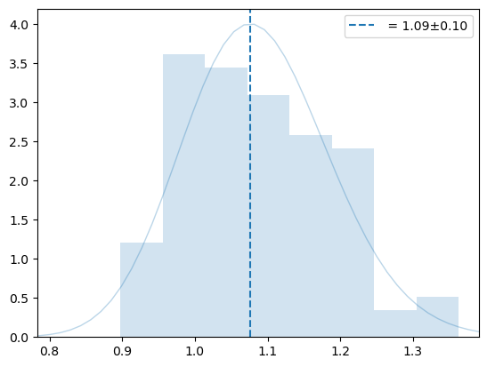
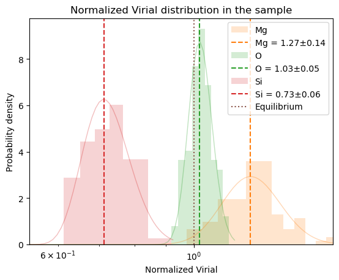
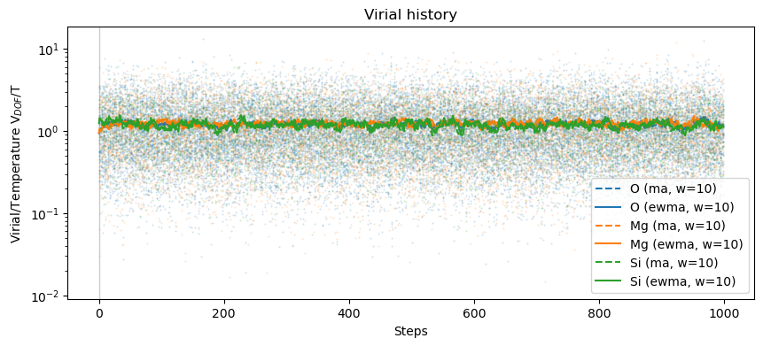
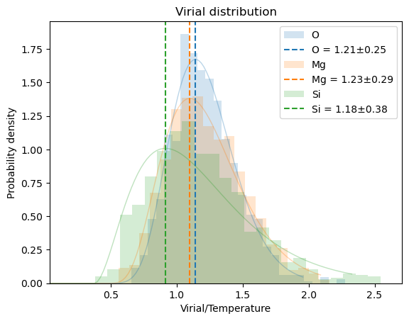
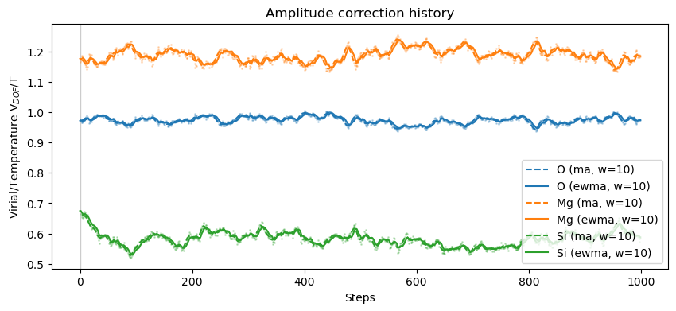
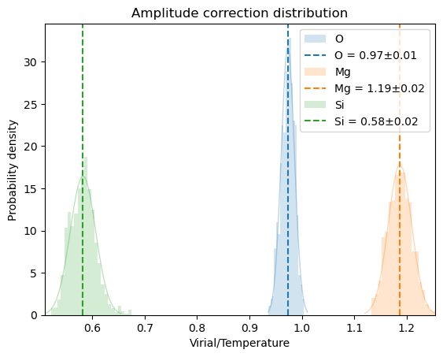

from hecss.monitor import plot_stats, plot_xs_stat
from hecss.monitor import plot_acceptance_history, plot_dofmu_stat
from hecss.util import select_asap_model, create_asap_calculator
from hecss.util import calc_init_xscale
from tqdm.auto import tqdmAmplitude correction extraction
This module provides a way to extract amplitude correction matrix from the eta calculation data generated by the
estimate_width_scale method.
LAMPS data on olivine
plot_virial_stat
plot_virial_stat (cryst, smpl, normal=True)
model = select_asap_model('Universal')
print(f'Using potential model: {model}')
oliv = ase.io.read('data/spinel.POSCAR')
oliv.calc = create_asap_calculator(model)
print(f'Space group: {spglib.get_spacegroup(get_cell_data(oliv))}')Using potential model: LJ_ElliottAkerson_2015_Universal__MO_959249795837_003
Space group: Fd-3m (227)N = 100
sampler = HECSS(oliv, lambda : create_asap_calculator(model))
m, s, xscl = sampler.estimate_width_scale(N, Tmax=1000)wm = np.array(sampler._eta_list).T
y = np.sqrt((3*wm[1]*un.kB)/(2*wm[2]))
plot_hist(y, '', 0, normal=False, df=3*len(oliv))
plt.legend()
plt.show()
plt.semilogx()
plot_virial_stat(oliv, sampler._eta_samples, normal=False);
T = 600
N = 1_000
dofmu = []
xsl = []
sampler.xscale_init = xscl.copy()
osamples = sampler.sample(T, N, dofmu_list=dofmu, xscale_list=xsl)
# osamples = [s for s in tqdm(sampler._sampler(T, N,
# dofmu_list=dofmu, xscale_list=xsl), total=N)]plot_virial_stat(oliv, osamples, normal=False);
plot_dofmu_stat(oliv, dofmu, skip=0, window=10)

plot_xs_stat(oliv, xsl, skip=0, window=10)

VASP calculations
Here we use pre-calculated vasp data for 3C-SiC 2x2x2 suprecell
# Use more realistic pre-calculated data
supercell = '2x2x2'sc = ase.io.read(f'example/VASP_3C-SiC/{supercell}/sc_{supercell}/vasprun.xml')e0 = sc.get_potential_energy()eqdelta=0.05
eqsigma=0.2
nat = len(sc)
dim = (nat, 3)
symprec=1e-5
symm = get_symmetry_dataset(get_cell_data(sc), symprec=symprec)
dofmap = symm['mapping_to_primitive']
dof = list(sorted(set(dofmap)))
dofmu = np.ones((len(dof), 3))
mu = np.ones(dim)/home/jochym/.conda/envs/dev/lib/python3.11/site-packages/spglib/spglib.py:115: DeprecationWarning: dict interface (SpglibDataset['mapping_to_primitive']) is deprecated.Use attribute interface ({self.__class__.__name__}.{key}) instead
warnings.warn(xscale = np.ones(dim)
dofxs = np.array([xscale[dofmap==d,:].mean(axis=0) for d in dof])
vt = []
# for i, sfn in enumerate(sorted(glob(f'TMP/calc_{supercell}/w_est/*/vasprun.xml'))):
for i, sfn in enumerate(sorted(glob(f'example/VASP_3C-SiC_calculated/calc_{supercell}/w_est/*/vasprun.xml'))):
s = ase.io.read(sfn)
dx = normalize_conf(s, sc)[0] - sc.get_positions()
try :
f = s.get_forces()
e = (s.get_potential_energy() - e0)/nat
v = np.abs(dx*f)
v = dx*f
v /= v.mean()
dofv = np.array([v[dofmap==d,:].mean(axis=0) for d in dof])
# dofxs *= (1-2*eqdelta*(expit((np.sqrt(dofmu)-1)/eqsigma)-0.5))
# dofxs /= np.sqrt((dofxs**2).mean())
vt.append(dofv.reshape(-1))
except RuntimeError:
continue
vt = np.array(vt).reshape(-1,2,3)
vta = vt.reshape(-1,2,3).mean(axis=-1)
mu = vta.cumsum(axis=0)
mu /= np.arange(1,len(mu)+1)[:, None]# plt.semilogy()
plt.plot(mu, '-')
plt.plot(vta, '.', ms=1)
for dofn in 0, 1:
m = vta[:,dofn].mean()
s = vta[:,dofn].std()
plt.axhline(m, ls=':', color=f'C{dofn}')
plt.axhspan(m-s, m+s, color=f'C{dofn}', alpha=0.2)
mu[-1]array([1.01036281, 0.98963719])x=np.linspace(0.5,1.5,100)
for dofn in 0, 1:
rv = vt[:,dofn,:].mean(axis=-1).reshape(-1)
plt.hist(rv, density=True, bins='auto',
color=f'C{dofn}', alpha=0.33, label=f'{dofn}')
fit = chi.fit(rv, f0=12)
plt.plot(x, chi.pdf(x, *fit), ls=':', color=f'C{dofn}')
fit = norm.fit(rv)
plt.plot(x, norm.pdf(x, *fit), ls='-', color=f'C{dofn}')